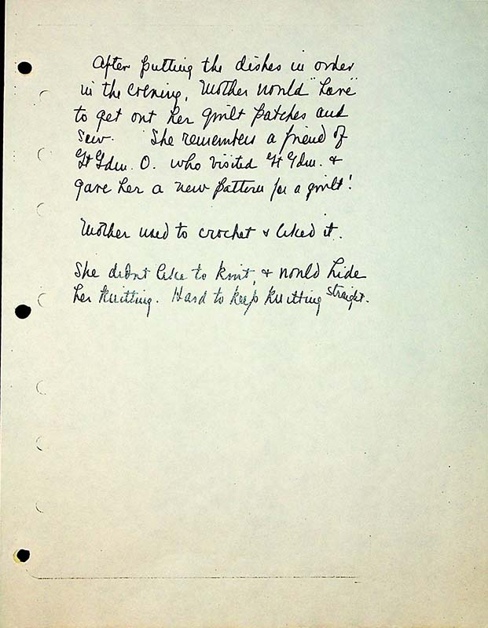

After putting the dishes in order in the evening, Mother would “hare” to get out her quilt patches and sew. She remembered a friend of Gt Gdm O. who visited Gt Gdm & gave her a new pattern for a quilt!
Mother used to crochet and liked it.
She didn’t like to knit & would hide her knitting. Hard to keep knitting straight.